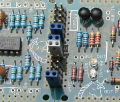
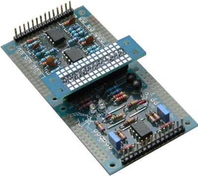
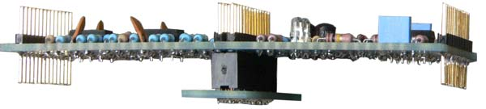
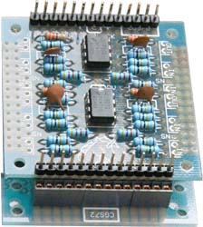

|
Dev-mod joiner for music synthesizers.
This board offers one way of joining dev blocks together. Methods of joining dev blocks, and the use of the CGS72 board.  Standard 0.1 header jumpers as used in computers etc.. When the boards are pushed up against each other, the spacing between their rows of pins is 0.1"
 CGS72 fitted with a 28 pin dual row 0.1" socket, used from above. Note that the mounting holes of the CGS72 line up with the mounting holes of the dev blocks it is joining.
  CGS72 fitted with a 28 pin dual row 0.1" socket, used from below. The pins fitted to the dev block are modified wire-wrap headers and have as much length below the PCB as they do above.
Notes:
Parts list This is a guide only. Parts needed will vary with individual constructor's needs. If anyone is interested in buying these boards, please check the PCBs for Sale page to see if I have any in stock.
Can't find the parts? See the parts FAQ to see if I've already answered the question. Also see the CGS Synth discussion group.
Article, art & design copyright 2007 by Ken Stone
| ||||||||